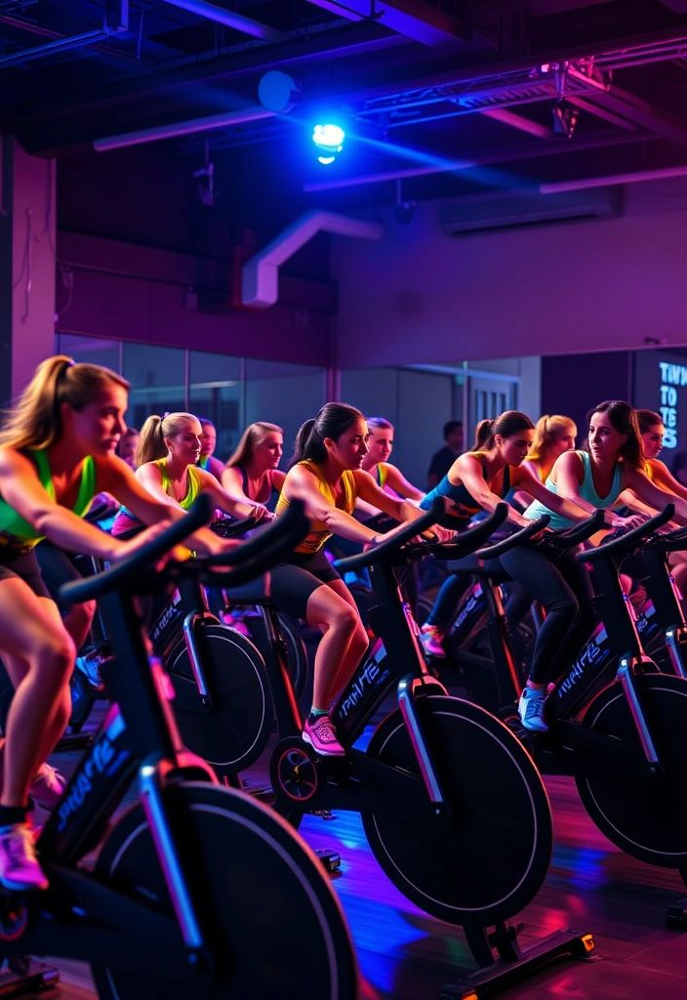
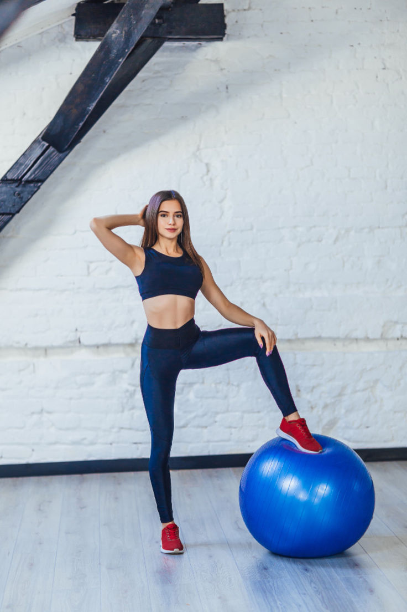

A mozgás nemcsak az alakformálásban segít, hanem javítja a vérkeringést, csökkenti a stresszt, és növeli az energiaszintet. Már napi 30 perc könnyű testmozgás is pozitív hatással van a szervezetre.
Ajánlott mozgásformák:
- Gyaloglás (min. 30 perc)
- Kerékpározás
- Jóga vagy nyújtás
- Otthoni saját testsúlyos edzések
- Tánc vagy aerobik
Kezdőknek heti terv:
- Hétfő: 20 perc jóga
- Kedd: séta a szabadban
- Szerda: pihenő
- Csütörtök: 15 perc otthoni torna
- Péntek: kerékpározás
- Szombat: séta + nyújtás
- Vasárnap: aktív pihenés

Kerékpározás
Jóga
Torna

Gimnasztika